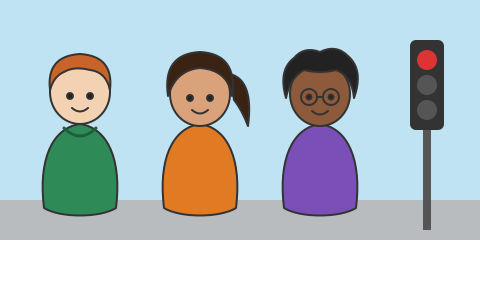

Codes in everyday life
Learn with an AI tutor
An AI tutor explains this page to you and helps you with the exercises. Choose your assistant:
Open with Claude Open with ChatGPT Open with Mistral Vibe
You use your own account with the provider. The assistant is not offered by lernapps.net: lernapps only provides the content and the exercises. The choice holds for all pages, on this device only.
Messages without words
Class 6b has arrived at Seeberg by train and is walking from the station to the youth hostel. Selin points at the street: there are messages without words everywhere, at the traffic lights, on the milk carton in Mia's bag, on the signs.
In the first chapter you saw how information becomes data. On this page you will learn about codes: fixed rules for turning data into other symbols.

© CC-BY-4.0Jona, Selin and Mia on the way to the youth hostel
Exercise
Solution
Right answer: The red man at the crossing lights up. – Stop and wait.; The green man at the crossing lights up. – You may cross.; The till beeps at the barcode on the milk. – The till has read the number of the product.
Each sign stands for a meaning by a fixed rule. If you know the rule, you understand the sign without words.
Morse code
At Seeberg, Jona and Selin sleep in different rooms. In the evening they want to send each other messages with a torch. They practise on the way. For this they use Morse code: each letter is a series of short flashes (·) and long ones (–). Between two letters they pause, shown here as a gap.
| Letter | Signal |
|---|---|
| A | · – |
| E | · |
| I | · · |
| M | – – |
| N | – · |
| O | – – – |
| S | · · · |
| T | – |
- code
A code is a fixed rule that turns symbols into other symbols. To encode means to turn a message into the code. To decode means to turn it back.
Remember
The sender and the receiver must know the same code table. And the pauses are part of the code. Without a pause, “· · ·” (S) might become “· ·” and “·” (I and E).
Practice
Exercise
Solution
SEE right answer
· · · is S, then · twice for E: SEE, as in Seeberg (and the English word see).
EEEEE
That is how you read it if you ignore the pauses. The first three dots belong to one letter.
OEE
O is three long flashes, – – –. But Selin flashes three short ones.
With the pauses, every letter is clear. Without pauses you could read the signals in a very different way.
Exercise
Solution
Right answer: 1. – ·, 2. ·, 3. · · ·, 4. –
N is – ·, E is ·, S is · · ·, T is –. The order of the letters decides the order of the signals.
Exercise
Solution
Right answer: 9
S is · · ·, O is – – –, S is · · ·. That is 3 + 3 + 3 = 9 signals.
Exercise
Solution
Right answer: The statement is false.
Anyone can know Morse code, the traffic lights and the barcode. A code is mainly there to help pass on messages. You will learn how to keep a message secret in the chapter “Secret messages”.
Now you can encode and decode with a code table. Morse code needs short, long and the pause. On the next page you will use just two symbols, 0 and 1, to write numbers too.
Found a mistake or have an idea for this app?